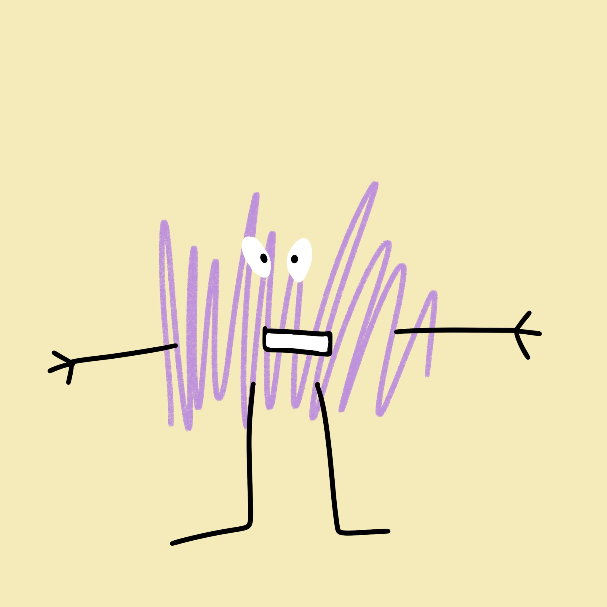
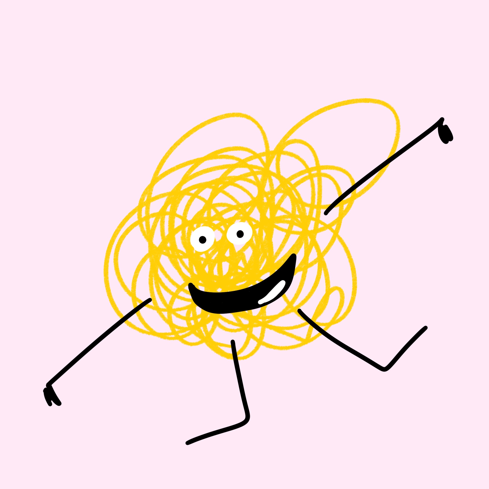
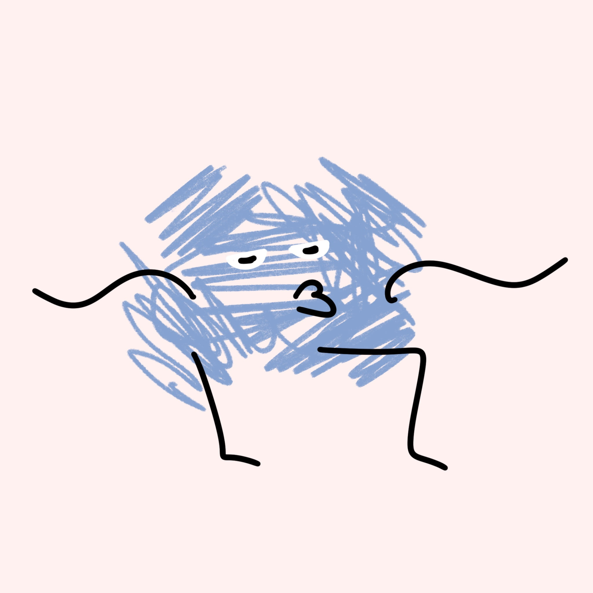

-
Фритрек и нулевой спринт: Подготовка к работе
</fear> Это было самое начало пути. На этом этапе важно было проникнуться основами и настроиться на учёбу. И, возможно, подумать, как новые знания могут повлиять на ваше будущее.
В это время мне было сложно осознать, что я действительно решилась на этот большой шаг. Но все стало легче, когда я пообщалась с ребятами из кагорты и поняла, что вместе будет не так уж страшно.
-
1 спринт: Я — чистый лист
</interest>
На первых этапах мы работали со страхами и сомнениями, которые часто испытывают новички. Один из них — страх перед чистым листом. Это, конечно же, намного сложнее, чем боязнь куска бумаги. Часто за этим ощущением скрываются более глубокие вопросы: с чего начать? а вдруг будет слишком сложно? что, если я не справлюсь?
Первый проект показал мне, что сложно начать и, что самое интересное, так же сложно закончить и решиться отправить работу на ревью. Но все, в итоге, стоит своих усилий.
-
1 спринт: А если не получится?
</inspiration> Первый проект — позади! Но это всё ещё самое начало пути. Радость могла быстро померкнуть и смениться ожиданием провала. Или вы, наоборот, могли вдохновиться успехами и поверить в себя.
Результат первого проекта меня впечатлил и дал ощущение того, что все возможно.
-
2 спринт: Погоня за идеалом
</indifference>На этом этапе вы уже достаточно разбирались в основах вёрстки, чтобы понять, как много ещё впереди. Вы могли попытаться погнаться за идеалом и понять, что он недостижим. А, может, вы вовсе и не подвержены перфекционизму и вместо того, чтобы сделать идеально, старались просто сделать.
Я прочувствовала, что такое работа в команде. Ведь мне пришлось "доделывать" уже набросанный проект. Было необычно и, если честно, не так интересно, как создавать что-то личное, что-то свое.
-
2 спринт: О тех, кто рядом
</wonder>Всё это время вы были не одиноки (хотя, возможно, иногда и чувствовали, что одни против целого мира). Вас окружали одногруппники, команда сопровождения и просто близкие люди, которым можно пожаловаться, если очередной макет просто так не поддавался. Осваивать что-то новое легче, когда рядом есть единомышленники, не правда ли?
Чувство одиночества приходит каждый раз, но быстро проходит, когда в чате кагорты все делятся своими проблемами.
-
3 спринт: Обходные стратегии
</fright>На этом курсе вы постоянно решали разные задачи. В какой-то момент вам могло показаться, что решения просто иссякли. Значит, пришло время посмотреть на задачу под другим углом.
Это был ооооооочень сложный проект. Как практически, так и эмоционально. Море слез, ноль оставшихся нервов. Однако, когда на ревью приходит всего несколько несложных ошибок - слезы становятся слезами счастья. Особое спасибо наставнику Максиму за помощь и терпение!!
-
3 спринт: Когда опускаются руки
</relief> Во время учёбы часто возникает чувство, когда не знаешь, за что хвататься. Вроде и проектную пора сдавать, и задачи хочется порешать, и в теории получше разобраться, и жизнь не забыть пожить. В такие моменты очень нужна концентрация. Вспомните, откуда вы её черпали.
Концентрацию черпать не приходилось. Она автоматически появлялась от накала переживаний и стресса хахаха
-
«Сейчас я здесь»
</limbo>Сейчас вы уже очень много знаете о вёрстке. Но это только начало. Во-первых, впереди ещё много материала про «красотищу». Во-вторых, с окончанием курса учёба не заканчивается. Вёрстка — это целый мир. И этот мир постоянно меняется. Познать его полностью не получится, но это тот случай, когда важен сам процесс познания. Ведь часто путь — и есть результат.
Ох, так страшно все это. Столько надо изучить, столько надо узнать и столько всего сделать. Зато какие возможности открываются!!